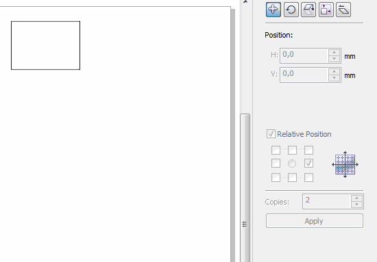

Transformation. Apply to Duplicate
kuterma2 / 15.09.2010, 13:21/00:41
Форум:
Парни, одолела меня необходимость постоянно тыкать в кнопку "Apply " на панели Transformation... Галочки ставить там ещё к тому-же...
Часто приходится дублировать объекты вправо или влево... вверх или вниз... Хотелось бы макрос замутить на эту тему. Смысл такой - нажимаешь на гор.клавишу и справа (или слева или сверху или снизу) дублируется этот объект...
Попробовал тупо записать сам - не выходит...
Тута нужен спец... Ежели кто может - может кто поможет?!.. а?..
Думаю такой макрос пригодится не только мне...
О, масть попёрла! (а то я думал одному мне гож энтот макрос)
Версия номер 2. Теперь может добавлять заданное кол-во копий (как в CorelX5).
Макросы это конечно хорошо, НО. Что полезного в этом макросе что не умеет делать докер трансформации?

А вот теперь, как должен работать макрос, что бы он был реально полезен и не дублировал функции программы!
А мне нравится по горячей клавише дублировать всё-таки! Песня!
Надо объект вправо сдублировать - ТЫК - и готово.
(Конечно можно и мышью, но ТЫК - предпочтительней - не надо в экран пялиться и мышью целиться в нужное место - зрение бережём мало-мало, опять-же)
ну так тогда интерфейс в топку. зачем нужно было форму то делать? :)
Ну во-первых не у всех 15 корел(у меня 13), чтобы делать несколько копий сразу, что бывает очень удобно.
Во-вторых докер немного неудобный. Постоянно нажимать на apply, а перед этим выбирать сторону...
Не спорю, макрос классный. Но чтобы его сделать надо много знаний в программировании, и времени, конечно. Ни того, ни другого у меня нет :) ) Видимо этот макрос не бесплатный :)
Не тебе одному :D Я на работе на несколько компов поставил, всем нравится.
Отдельное спасибо shark за сам макрос собственно.
Не ну коль нравится то юзайте, чё ))) Хозяин - барин, как говорится.
А вообще, дублирование можно и без докера очень быстро сделать. )))
Просто я работаю во многих программах, в том числе и в иллюстраторе и в индизайне. После них элементарные операции в кореле это СУПЕР БЫСТРО, даже без макросов. :D
Главное сноровка ))))
Ну вот и порешили :D Тоже повесил дублирование на горячие клавиши, а когда требуется наглядность, то с интерфейсом юзаю.
Гут!
Да, и Шарку конечно спасибо!
Кстати, если нужно сдублировать много копий то можно воспользоваться еще и таким макросом. Конечно по функционалу он не такой мощный как макрос Sancho, зато простой и бесплатный
http://cdrpro.ru/forum/13-473-1
Страницы